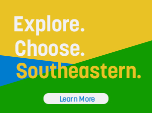

Future Students
In Fall of 2015, Southeastern began a new marketing campaign for potential students. It started with a large print collection of brochures, forms, etc. In order to give these students a consistent experience from start to finish, I was tasked with designing a sub-site under Southeastern for these "future students" that would tie back to the marketing materials.
Future Students Desktop
Services Web Design, Iconography, CSS
The color and type treatment for the site were influenced by the print materials. The typeface, Korolev, was used there. I decided to continue using these bold headings with tight line spacing and a hint of color throughout. I also decided to take the opportunity to evoke a sense of layering and depth with them by removing the headings from the box of color containing the content. The color palette was also inspired by print, though I chose to use a lower opacity to allow the photos to remain visible. The main pages are very image-centric, and they are all real photos from Southeastern's campus. This gives visitors a sense of authenticity that can be lacking in stock photography or flat designs.
The sub pages – Meet Our Students and Admitted Students – maintain a similar use of color with lower opacity, but the headings are more consistent with the main Southeastern site. By doing this, as students delve deeper into the main site and farther from Future Students, the transition will seem less abrupt and still appear to be Southeastern from beginning to end.
** In addition to doing the design for this site, I also worked in collaboration with a team member on the CSS.
Responsive
Like the rest of Southeastern's website, the Future Students site was made to be responsive. The main difference is that the headers get less complex, allowing the content to be the focus. However, content that was previously hidden behind hover states is shown by default on mobile and tablet sizes as well, so that the visitors will not lose out on any important information, no matter what device they are using.
Custom Buttons and Iconography
In addition to the website design, I was also tasked with creating some icons for buttons on the subpages. There is iconography in various places on the website, so I used those as a starting point for determining line weights and style choices. The icons are meant to be professional and clear, while still having the touch of fun and interest a future college student would find appealing.
It was also decided that it would be beneficial to create a button for the main site to link to the Future Students site. In initial iterations, this button was difficult to tell if it could be clicked or not, so I chose to use a more traditionally styled button within, leading the visitors to click through.
